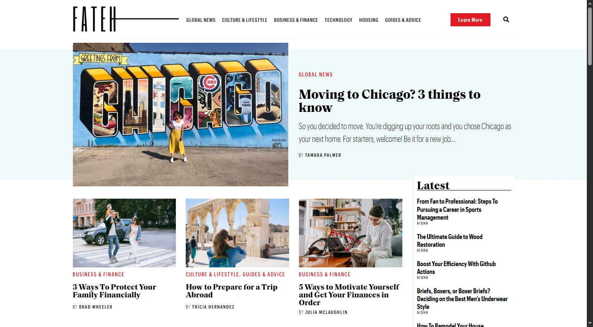

Una web.
Una identidad.
Una variante de portada con un proyecto real de fondo, desplazamiento suave y CTA visible.
Cotizar mi sitio↗Los mismos proyectos con cinco efectos reales de Swiper. Este comparador es para elegir la dirección; estos controles no forman parte de la página comercial.